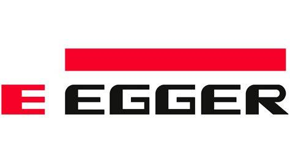
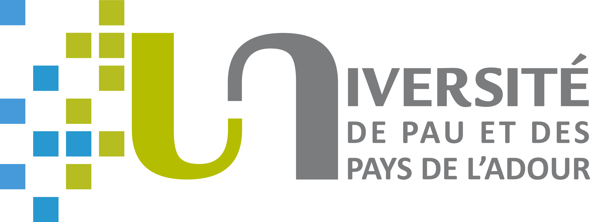

2026 – 2028 · 2 ans
Master SIGLIS – En alternance chez EGGER Panneaux & Décors
Université de Pau et des Pays de l'Adour (UPPA) · Rion-des-Landes / Côte Basque


Master Systèmes Informatiques pour le Génie de la Logistique Industrielle et des Services (SIGLIS) réalisé pendant 2 ans en alternance au sein de l'entreprise EGGER Panneaux & Décors.
💼 Alternance : EGGER Panneaux & Décors📅 2026 – 2028🎓 Niveau Bac+5